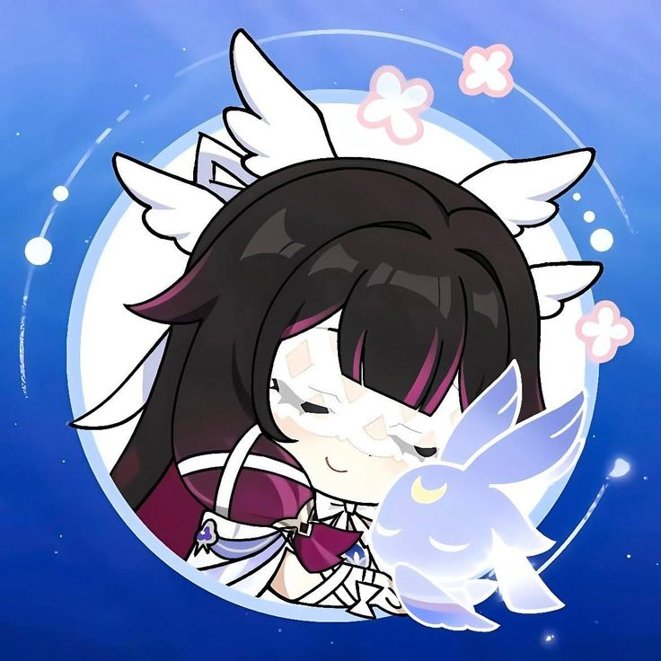

關卡 A 守護成功！
防線崩潰...

【核心操作】 方向鍵：移動角色 X 鍵：普通攻擊 / 啟動遊戲 1~4 鍵：切換守護者
【角色技能 Q/W/E/R】 哥倫比婭 (Q)：恢復派蒙 3 HP 胡桃 (W)：發射巨型穿透櫻花彈 娜維婭 (E)：召喚岩石雨爆發 納西妲 (R)：全隊回滿血 (不含陣亡者)
【戰鬥機制】 ● 角色 HP 歸零將無法切換回該角色。 ● 派蒙是左邊的防線。 ● 派蒙 HP 歸零 或 全隊角色HP歸零 即遊戲失敗。 ● 胡桃的子彈可以穿透護盾。 ● 納西妲的子彈會自動鎖定最近的敵人。 (有免疫效果或護盾單位則無法造成傷害) 【受傷機制】 ● 角色撞到敵方單位損失1生命值。 ● 派蒙被敵方單位衝撞會損失1生命值。 ● 撞到牆壁即死。 ● 撞到BOSS即死。